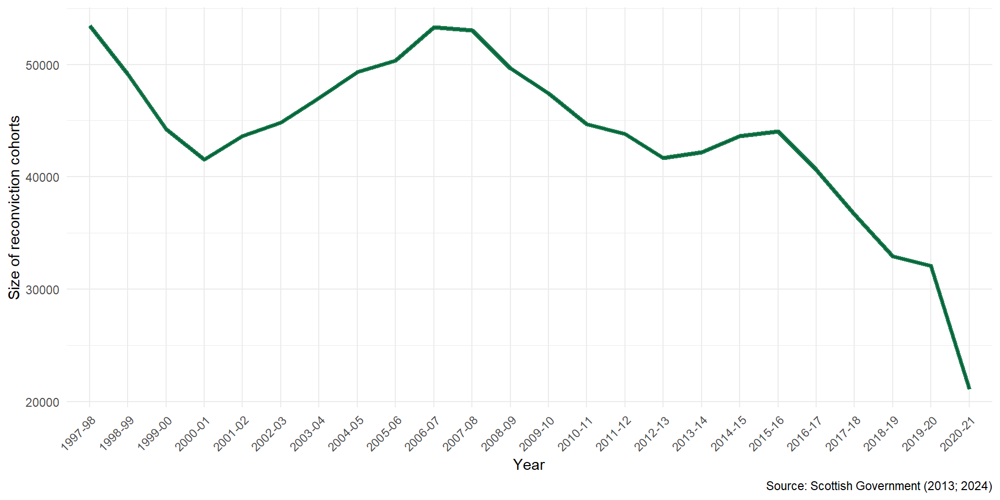
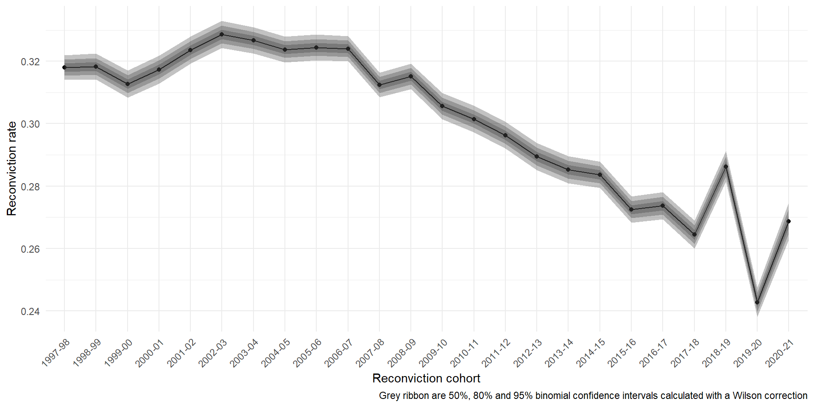
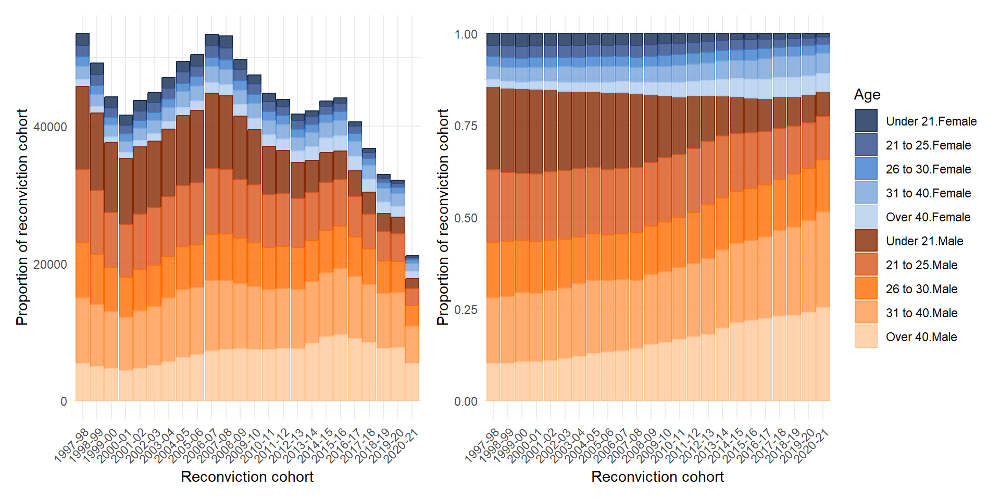
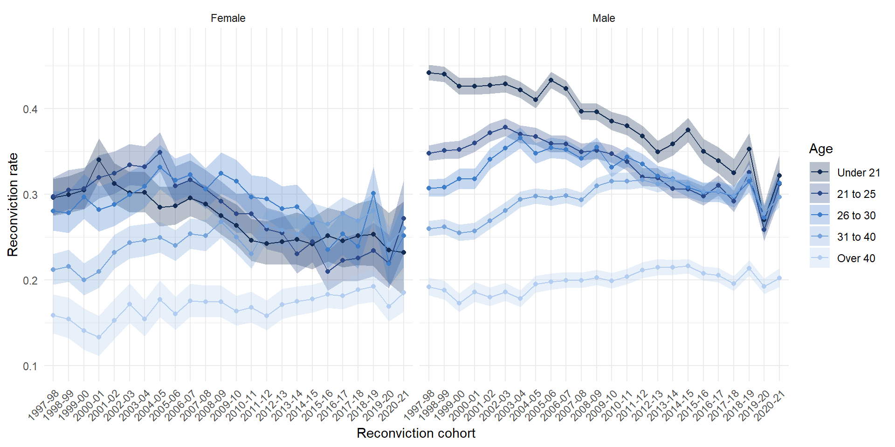
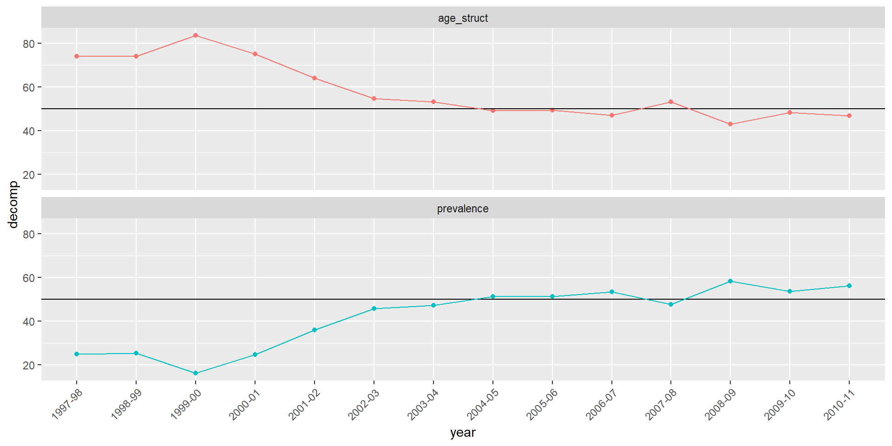

| Standardization and Decomposition of reconviction rates in Scotland | ||||
|---|---|---|---|---|
| Impact of... |
Reconviction cohort
|
Difference in rates | % of crude difference | |
| 1997-98 | 2020-21 | |||
| Age | 0.30 | 0.27 | -0.04 | 74.06 |
| Sex | 0.29 | 0.29 | 0.00 | 1.08 |
| Reconviction | 0.29 | 0.28 | -0.01 | 24.87 |
| Crude rate | 0.32 | 0.27 | -0.05 | 100.00 |
| Data from Scottish Government (2024). Calculations authors' own. | ||||
Why is Scotland’s reconviction rate falling?
Ben Matthews, Josiah King and Jamie Buchan
University of Stirling | University of Edinburgh | Edinburgh Napier University
February 24, 2026
Overview
- The crime drop has changed the demographics of people being convicted
- Changing demographics of people convicted complicates comparisons in the aggregate reconviction rate over time
- The overall change in the reconvictions rate in Scotland is partly due to less reconvictions and partly due to changing demographics
- This creates statistical bias in the aggregate reconviction rate if it’s used as a measure of ‘effectiveness’ of the justice system, an example of a statistical phenomenon known as the ‘amalgamation paradox’
- We demonstrate this problem with a worked example using Scottish reconvictions data
Part One: The crime drop in Scotland
Fewer people are being convicted
The overall reconviction rate is falling
The demographics of convictions are changing
A gap in the crime drop
- There has been a lot written about the causes of the crime drop (Farrell, Tilley, and Tseloni 2014; Tonry 2014; Ball et al. 2023), including previous attempts to describe changes in the demographics of crime and use these descriptions to build explanations for why there is less crime now than in the past (Matthews and Minton 2018; Tuttle 2024; Farrell, Laycock, and Tilley 2015)
- There haven’t - at least as far as I’m aware - been any studies which go on to explore the consequences of these changing demographics for the justice system more broadly
- One area these changing demographics can matter are when measuring CJS ‘performance’
Part Two: Measuring ‘Performance’
Reconviction rates as a performance metric
The Sentencing Council (for England and Wales) says the reconviction rate is a “key metric for evaluating the effectiveness of sentencing” (Gormley, Hamilton, and Belton 2022, p18)
“Measuring recidivism is important, as it is one indicator of the effectiveness of the criminal justice system in the rehabilitation of offenders. Reconviction rates are a proxy measure for recidivism” (Scottish Government 2024, p8) and “Reduce reconviction rates” was a National Performance Framework indicator from 2007 to 2018
The common logic is that if the reconviction rate goes down then the criminal justice system is doing a better job at rehabilitating offenders
But it’s not so simple
However, “differences in the offending related characteristics of those included in each cohort make comparing reoffending rates problematic, across both time and jurisdictions.” (Browne 2024, p19)
We can think of the overall reconviction rate as a weighted mean of the reconviction rates in different demographic groups, weighted by the group size. You can have changes in the rate due to changes in the means or changes in the rates.
This is known as the amalgamation paradox (Good and Mittal 1987) or Simpson’s (1951) paradox
Because of changes in the distribution of characteristics of the people who have been convicted change in the overall reconviction rate can be biased. The overall change we see will be both due to changes in the prevalence of reconviction amongst demographic groups, but also the mix/composition of those groups who are in each reconviction cohort.
The anatomy of a rate
- To use reconviction rates as measures of criminal justice system ‘performance’ you only want to measure change in the subgroup rates
- But change in the overall rate can come from either changes in the subgroup rates or changes in the relative subgroup sizes
“If the target for a reduction in the overall reconviction rate is met, and this is mainly due to more people with a lower likelihood of re-offending being brought into the criminal justice system and being convicted, rather than through a reduction in rates of re-offending among those who would normally be brought into the system, this would bring little cause for celebration.” (Kirkwood 2008, p9)
Standardized reconviction rates as performance indicators
This compositional problem is well known, and typically what people do is come up with some counterfactual ‘standardized’ reconviction rate to facilitate comparisons across years when measuring performance (Francis, Harman, and Humphreys 2005; Cunliffe and Shepherd 2007; Drake, Aos, and Barnoski 2010) to correct for the problem of changing ‘offender mix’
These methods typically focus on whether the observed reconviction rate is higher or lower than the standardized (read: made up with maths) rate
These methods do not directly assess the drivers of any change in the observed rate - specifically the relative importance of demographic changes and change in ‘sub-group’ reconviction rates in producing change in the aggregate rate
To date, no studies have assessed the extent to which these long-term demographic changes as reflected in the crime drop can influence aggregate performance measures
Part Three: An alternative approach
Standardization and decomposition
- The methods of standardization and decomposition can separate out changes in the reconviction rate that are due to demographic change from those due to change in the underlying reconviction rate for different age groups
- Standardization and decomposition can also separate out the relative importance of different factors in driving aggregate change (e.g. age and sex)
- Previous regression-based approaches (Francis, Harman, and Humphreys 2005; Cunliffe and Shepherd 2007; Drake, Aos, and Barnoski 2010) to correct for the problem of changing ‘offender mix’ can perform this standardization part, but don’t focus on the decomposition part
- We illustrate this approach using the standardization and decomposition methods described by (Das Gupta 1993) and implemented in the
{dasguptr}R package (King and Matthews 2025) to Scottish reconvictions data from 1997-2022
Research design
Research Question
- How much of the change in the overall reconviction rate in Scotland between 1997 and 2022 is attributable to changing demographics?
Data
We analyse data from ‘reconviciton cohorts’ in Scotland between 1997/1998-2020/21. These are made available by Scottish Government as part of their Reconvictions Bulletin (Scottish Government 2024)
A reconviction cohort is “all offenders who either received a non-custodial conviction or were released from a custodial sentence in a given financial year, from the 1st April to the 31st March the following year” (Scottish Government 2024, p40)
There is nothing particularly special about these time points, and the same approach would work for other time periods and other characteristics
Some evidence that Scotland might be an extreme case here with larger demographic changes than in other countries (Matthews 2023)
Measures
- “The reconviction rate is presented as the percentage of offenders in the cohort who were reconvicted one or more times by a court within a specified follow up period from the date of the index conviction. For most reconviction analyses in this bulletin, the follow-up period is one year,” (Scottish Government 2024, p10)
- We decompose the overall reconviction rate by age and sex
- Age groups:
- Under 21, 21 to 25, 26 to 30, 31 to 40, over 40
- Sex:
- Male, female
Method
The Das Gupta (1993) approach to standardization and decomposition calculates what the reconviction rate ‘would have been’ in each comparison year if each year had the average demographic composition
The differences between these ‘standardized’ rates to the observed rates are then used to calculate how much of the change in the observed rate is due to changes in the underlying reconviction rates for each age group, and how much is due to the change in the mix of the age groups
Results
Change in reconviciton rate by age group
Changing demographic mix

How much change in the reconviction rate is due to demographic mix?
Analysis
- The dramatic changes in the demographics of people involved in the justice system that we have seen in Scotland distorts simple comparisons over time in aggregate performance measures such as the reconviction rate, because the people who make up reconviction cohorts in the early 2000s have a very different profile to those who make up reconvictions cohorts in the mid 2020s
- Young people used to have the highest reconviction rate of all age groups, but this is has fallen
- Those over 40 have consistently lower reconviction rates, but these have not fallen
- Young people also used to make up more of the reconviction cohorts
- In terms of the overall reconviction rate, a group of people with high levels of reconviction have been replaced by people with lower levels of reconviction
Analysis
- We can attribute about three-quarters of the fall in the reconvictions rate in Scotland between 1997/98-2020/21 to demographic change in the population of people convicted, rather than falls in the reconviction rate per se.1
- If you want to use the reconviction rate as a measure of sentencing effectiveness or similar, you would think the justice system is doing a much better job than it is
- In an optimistic reading the change in the mix of people being reconvicted could still be due to criminal justice practices (e.g. more diversion from prosecution for young people), but is not attributable to the ‘effectiveness’ of the criminal justice system in rehabilitating offenders - it is purely due to changes in the demographic mix of people being convicted in the first place
- An alternative perspective: the criminal justice system is benefiting from the impacts of wider societal change where young people are less likely to be involved in offending, as well as lots of other ‘risky’ behaviours (Ball et al. 2023)
Limitations
- Coarse age categories could underplay the impact of changing age mix as a form of ‘measurement error’ (I think?)
- There might be other demographic or offence characteristics we are interested in (ethnicity; type of offence; type of sentence etc etc)
- The time periods selected are arbitrary and due to data availability
- Some of these would be resolvable with access to the underlying Scottish Offenders Index data
In summary
- The crime drop in Scotland has led to a profound shift in the demographics of the people coming through the criminal justice system
- This shift is so pronounced that it affects our capacity to understand the ‘effectiveness’ of punishment through aggregate measures such as the overall reconviction rate
- A perspective which focuses on aggregate measures of the criminal justice system rather than the people involved with the system will be mislead by measures of system ‘performance’
- There are lots of other possible ways that demographic changes in crime may impact the functioning of the criminal justice system and public perceptions of crime
Coda
What do to about this?
If we wanted to make a ‘so here’s what the Sentencing Council/Scottish Government should do now’ recommendation there are two possible paths:
Option one: The Sentencing Council/Scottish Government/whoever should abandon a single overall measure and instead should use reconviction rates (or an alternative measure of your choice) for each demographic sub-group as well as overall reconviction rates
Option two: [see above] should use some standardization and decomposition method to construct an ‘improved’ performance measure
I don’t think either of these are good recommendations
Reconviction rates for each group
- Suggesting that policy-makers/whoever analyse trends for all groups runs counter to the logic of quantification - the whole point is to reduce the amount of information required to understand the thing you care about and have an ‘objective’ and apolitical measure (Porter 1996)
- Requiring reconviction rates for pre-defined population groups raises the question of which groups would make the cut, and how they would be defined
- This is famously the paradoxical bit of Simpson’s paradox - the hard part is identifying the subgroups you need to stratify by (Pearl 2014); it is paradoxical because you need to choose what story to tell about the data, not because of anything inherently statistical
“Following consultation with key users”
- For the same reason a technical ‘fix’ in terms of constructing a standardized reconviction rate would be adding ‘politics’ (in terms of deciding what to standardize by and how) into measuring reconvictions
- Also, in practice there might be limited appetite for an esoteric and tricky to understand measure amongst ‘key users’
In bulletins prior to 2017/18, reoffending figures were provided alongside adjusted reoffending rates for adults and the overall cohort, to help provide an estimate of change in reoffending. Following consultation with key users, the decision was taken to exclude this from future publications to avoid confusion in he interpretation of findings.
So what to do?
- If you really want to use reconviction rates as a performance indicator, I would say that measuring reconviction rates for each group that you care about is probably preferable than coming up with a standardized measure
- It is useful information to know if there are groups who are not seeing the same overall decline in reconvictions and whether this is masked by the overall rate
Thank you!
Bonus slides
A word on desistance
- There are also conceptual reasons why we might not want to use reconvictions as a performance measure
- Klingele (2019) advocates for measuring ‘markers of desistance’ instead of a binary reconviction measure, see Weaver (2019) and Maruna (2025) for more conceptual critiques)
- But this isn’t so relevant for our concerns here - the same statistical distortion would occur regardless of the outcome measure used1
Effect of comparison year
References
Ball, Jude, Richard Grucza, Michael Livingston, Tom ter Bogt, Candace Currie, and Margaretha de Looze. 2023. “The Great Decline in Adolescent Risk Behaviours: Unitary Trend, Separate Trends, or Cascade?” Social Science & Medicine 317 (January): 115616. https://doi.org/10.1016/j.socscimed.2022.115616.
Browne, S. 2024. “Adult and Youth Reoffending in Northern Ireland (2021/22 Cohort).” https://www.justice-ni.gov.uk/sites/default/files/publications/justice/Adult%20and%20Youth%20Reoffending%20in%20Northern%20Ireland%20%28202122%20Cohort%29.pdf.
Cunliffe, Jack, and Adrian Shepherd. 2007. “Re-Offending of Adults: Results from the 2004 Cohort.”
Das Gupta, Prithwis. 1993. Standardization and Decomposition of Rates: A User’s Manual. 186. US Department of Commerce, Economics and Statistics Administration, Bureau of the Census.
Drake, E. K., S. Aos, and R. Barnoski. 2010. “Washington’s Offender Accountability Act: Final Report on Recidivism Outcomes.” Olympia: Washington State Institute for Public Policy.
Farrell, Graham, Gloria Laycock, and Nick Tilley. 2015. “Debuts and Legacies: The Crime Drop and the Role of Adolescence-Limited and Persistent Offending.” Crime Science 4 (1). https://doi.org/10.1186/s40163-015-0028-3.
Farrell, Graham, Nick Tilley, and Andromachi Tseloni. 2014. “Why the Crime Drop?” Crime and Justice 43 (1): 421490. http://www.journals.uchicago.edu/doi/abs/10.1086/678081.
Francis, Brian, Juliet Harman, and Leslie Humphreys. 2005. “Predicting Reconviction Rates in Northern Ireland.” https://eprints.lancs.ac.uk/id/eprint/49993/1/francis_predicting_reconviction_rates_in_northern_ireland_7_2005.pdf.
Good, I. J., and Y. Mittal. 1987. “The Amalgamation and Geometry of Two-by-Two Contingency Tables.” The Annals of Statistics 15 (2): 694–711. https://www.jstor.org/stable/2241334.
Gormley, Jay, Melissa Hamilton, and Ian Belton. 2022. “The Effectiveness of Sentencing Options on Reoffending.” https://www.sentencingcouncil.org.uk/wp-content/uploads/Effectiveness-of-Sentencing-Options-Review-FINAL.pdf.
King, Josiah, and Ben Matthews. 2025. “DasGuptR: Das Gupta Standardisation and Decomposition.” https://doi.org/10.32614/CRAN.package.DasGuptR.
Kirkwood, Steve. 2008. “Evidencing the Impact of Criminal Justice Services on Re-offending.” CJScotland.
Klingele, Cecelia. 2019. “Measuring Change.” The Journal of Criminal Law and Criminology (1973-) 109 (4): 769–817.
Maruna, Shadd. 2025. “Redeeming Desistance: From Individual Journeys to a Social Movement.” Criminology n/a (n/a). https://doi.org/10.1111/1745-9125.12393.
Matthews, Ben. 2023. “The Age-Crime Curve and the Crime Drop in (Some of) Northern Europe,” June. https://benmatthewsed.github.io/age_crime_curve_europe/age_crime_curve_europe.html#/title-slide.
Matthews, Ben, and Jon Minton. 2018. “Rethinking One of Criminology’s ‘Brute Facts’: The Age–Crime Curve and the Crime Drop in Scotland.” European Journal of Criminology 15 (3): 296–320. https://doi.org/10.1177/1477370817731706.
Pearl, Judea. 2014. “Comment: Understanding Simpson’s Paradox.” The American Statistician 68 (1): 8–13. https://www.jstor.org/stable/24591584.
Porter, Theodore. 1996. Trust in Numbers.
Scottish Government. 2024. “Reconviction Rates in Scotland: 2020-21 Offender Cohort.” Scottish Government.
Simpson, E. H. 1951. “The Interpretation of Interaction in Contingency Tables.” Journal of the Royal Statistical Society: Series B (Methodological) 13 (2): 238–41. https://doi.org/10.1111/j.2517-6161.1951.tb00088.x.
Tonry, Michael. 2014. “Why Crime Rates Are Falling Throughout the Western World.” Crime and Justice 43 (1): 163. http://www.journals.uchicago.edu/doi/abs/10.1086/678181.
Tuttle, James. 2024. “The End of the Age-Crime Curve? A Historical Comparison of Male Arrest Rates in the United States, 1985–2019.” The British Journal of Criminology 64 (3): 638–55. https://doi.org/10.1093/bjc/azad049.
Weaver, Beth. 2019. “Understanding Desistance: A Critical Review of Theories of Desistance.” Psychology, Crime & Law 25 (6): 641–58. https://doi.org/10.1080/1068316X.2018.1560444.